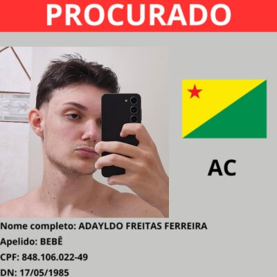

Sobre Nosso Grupo
Conheça os desenvolvedores deste projeto
Este projeto foi desenvolvido como parte da disciplina de Desenvolvimento para Web (Web Lab) do Instituto de Tecnologia (ITEC) da Universidade de Passo Fundo. Nosso grupo trabalhou para criar uma plataforma interativa de disseminação de conhecimento sobre segurança da informação.

José Eduardo Zanette
Desenvolvedor Full Stack
Contribuiu com o design CSS e otimização para experiência do usuário.
Implementou o gerador de senhas com lógica JavaScript complexa.
Responsável pela validação de formulários e interatividade das páginas.
Gabriel Froehlich Ranzan
Desenvolvedor Frontend
Responsável pelo desenvolvimento das páginas de conteúdo e implementação da navegação.
Desenvolveu o sistema de temas (Dark/Light Mode) e a funcionalidade de acessibilidade.
Criou a identidade visual do projeto com CSS moderno e responsivo.
Acácio de Oliveira Mallmann
Desenvolvedor - Apoio
Participou do planejamento e organização das atividades do projeto.
Auxiliou na revisão dos conteúdos e testes das funcionalidades desenvolvidas.
Colaborou na validação das informações apresentadas no portal e na documentação do projeto.
Sobre o Projeto
🎓 Disciplina
Web Lab
📚 Instituição
Universidade de Passo Fundo - UPF
Instituto de Tecnologia - ITEC
👨🏫 Professores
Prof. Me. Leonardo Costella
Prof. Pablo Leon Rodrigues
🎯 Objetivo
Disseminar conhecimento sobre segurança da informação através de uma plataforma interativa